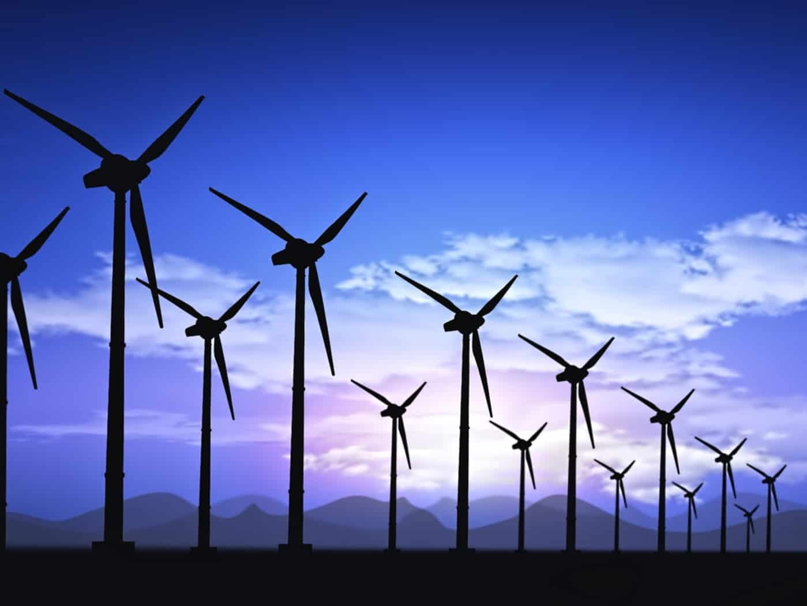

A geração de energia eólica é o processo de converter a energia cinética do vento em eletricidade utilizando turbinas eólicas. Esse método é uma forma de geração de energia renovável que tem crescido consideravelmente devido ao seu impacto ambiental reduzido e à sua sustentabilidade. Aqui está uma visão geral de como funciona: Captura do Vento: Turbinas Eólicas: São dispositivos equipados com lâminas (ou hélices) montadas em um eixo. Quando o vento sopra, ele faz com que as lâminas girem. Medição do Vento: A eficiência das turbinas depende da intensidade e da constância do vento. Por isso, a localização das turbinas é escolhida com base em estudos sobre o padrão e a velocidade do vento. Geração de Energia Mecânica: Rotação das Lâminas: O vento faz com que as lâminas da turbina girem. Essa rotação é convertida em energia mecânica. Eixo de Transmissão: A rotação das lâminas é transmitida para um eixo conectado ao gerador. Conversão em Energia Elétrica: Gerador: O eixo gira o gerador, que utiliza o princípio da indução eletromagnética para converter a energia mecânica em eletricidade. Dentro do gerador, um campo magnético em movimento gera uma corrente elétrica nas bobinas de fio. Controle e Ajustes: Sistema de Orientação: Muitas turbinas têm um sistema de orientação que ajusta a posição das lâminas para maximizar a captura do vento e otimizar a produção de energia. Controle de Velocidade: Para proteger a turbina de ventos excessivamente fortes, sistemas de controle ajustam a velocidade das lâminas ou desligam a turbina quando necessário. Distribuição da Energia: Transmissão: A eletricidade gerada é então transmitida através de linhas elétricas para a rede elétrica e distribuída para residências, empresas e indústrias.
• Renovável e Sustentável: O vento é uma fonte de energia infinita e não se esgota. • Baixas Emissões: Não emite poluentes ou gases de efeito estufa durante a operação. • Redução de Custos: Após a instalação, os custos operacionais são relativamente baixos e a energia gerada é geralmente competitiva em termos de custo.
• Intermitência: A produção de energia eólica depende da intensidade e da constância do vento, que pode ser variável. Isso pode exigir sistemas de armazenamento ou backup para garantir uma oferta contínua de energia. • Impacto Visual e Sonoro: Algumas pessoas consideram que turbinas eólicas têm impacto visual ou geram ruído. • Efeitos sobre a Fauna: Existe preocupação com o impacto das turbinas eólicas sobre aves e morcegos. A geração de energia eólica tem se mostrado uma alternativa viável e crescente em muitas partes do mundo, contribuindo significativamente para a diversificação da matriz energética e a redução das emissões de gases de efeito estufa.
